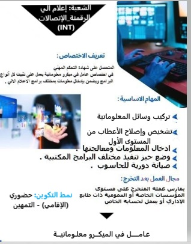

معلومات عامة عن التخصص:
هذا التخصص يتبع لتخصصات الإعلام الآلي حسب تصنيف المدونة الوطنية لتخصصات التكوين المهني .
- الشعبة: إعلام آلي _الرقمنة_الإتصالات (INT) .
- رمز التخصص: INT 1202 .
- المستوى التأهيلي: 03.
- الشهادة المسلمة: شهادة التحكم المهني.
- مدة التكوين: 18 شهر (منها شهر تطبيقي في مؤسسة عمومية أو خاصة).
- المستوى الدراسي المطلوب: الرابعة متوسط .
- نمط التكوين: حضوري (الإقامي) - التمهين .
بطاقة الوصفية للتخصص :
المهام الأساسية لعامل في الميكرو معلوماتية .
تركيب وسائل المعلوماتية:
تجهيز وتركيب الأجهزة والمعدات المعلوماتية بكفاءة عالية.
.تحيين يومي لأنظمة المعلوماتية :
ضمان تحديث الأنظمة والبرامج بشكل منتظم .
فحص ومعالجة الأعطاب :
تشخيص وإصلاح الأعطاب من المستوى الأول .
فرص العمل :
في كل قطاعات الاعلام الألي العامة أو العمومية.
مسار التطور التكويني ;
بعد الحصول على هذه الشهادة يمكنك:
- مواصلة التكوين لتصبح لمستغل معلوماتية .
- التقدم لتصبح تقني سامي عبر المعابر المهنية .